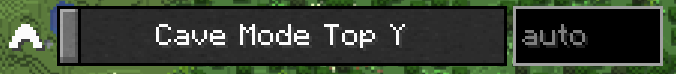
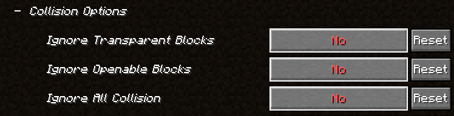

Mods für das Minecraft 1.21 SMP
Modloader
Fabric
(es kann auch Vanilla gespielt werden)
Minecraft Version 1.21
Erlaubte Mods
| Wichtigkeit | Mod-URL |
|---|---|
| empfohlen |
entweder OptiFine, OptiFabric oder Sodium, Indium, Iris Shaders, Continuity, Entity Culling, Entity Model Features, Entity Texture Features, Logical Zoom |
| praktisch | Xaero's Minimap (oder andere Minimaps mit ähnlichen Funktionen) |
| praktisch | Xaero's World Map (bitte nur auto Cave Mode Top Y benutzen! ) (oder andere World Maps mit ähnlichen Funktionen) |
| empfohlen | Simple Voice Chat |
| praktisch | Shulker Box Tooltip |
| praktisch | Inventory HUD+ (oder andere HUD Info Mods) |
| optional | MiniHUD (oder andere Tooltip Mods) |
| praktisch | Gamma Utils (Fullbright) (oder andere Fullbright/Gamma Mods) |
| optional | Freecam (bitte nur mit Collision! ) |
| optional | AppleSkin |
| optional | ReplayMod |
| optional | Litematica |
| (teilweise) praktisch | alle rein kosmetischen bzw. keinen Spielvorteil bietenden Mods wie Mod Menu oder Do a Barrel Roll |
| optional* | alle libaries oder APIs wie Fabric API oder MaLiLib |
| WICHTIG | KEINE chunk loading oder chunk caching Mods (wie Distant Horizons, Hold that Chunk) wegen Server Lag |
* könnten für einige Mods notwendig sein, bitte auf die Beschreibung der Mod achten
Bei Vorschlägen für weitere erlaubte Mods bitte an derlung auf Discord schreiben
Server-Side Mods
| Status | Mod-URL |
|---|---|
| ❌ | Fabric API |
| ❌ | Lithium |
| ❌ | Krypton |
| ❌ | FerriteCore |
| ❌ | Memory Leak Fix |
| ❌ | Clumps |
| ❌ | Chunkumulator |
| ❌ | spark |
| ❌ | TabTPS |
| ❌ | BanHammer |
| ❌ | AfkPlus |
| ❌ | Xaero's Minimap |
| ❌ | Xaero's World Map |
| ❌ | Simple Voice Chat |
| ❌ | Shulker Box Tooltip |
| ❌ | AppleSkin |
| ❌ | Just Mob Heads |
| ❌ | Just Player Heads |
| ❌ | Servux |
| ❌ | Whisperoo |
| ❌ | MiniMOTD |
| ❌ | Welcome Message |
Einige Mods könnten bei Projektbeginn noch nicht installiert sein, da die Updates für die neue Version noch nicht herausgekommen ist.
Ich werde die Mods jedoch so schnell wie möglich installieren und den Mod-Status auf der Website aktualisieren, wenn sie verfügbar sind.